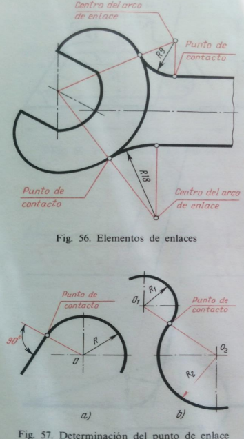

Texto
ENLACES
Al realizar los dibujos para la construcción de maquinaria, al igual que para la marcación de
piezas brutas en la industria, con frecuencia es necesario unir suavemente líneas rectas con
arcos de circunferencia o arcos de varias circunferencias, es decir, realizar enlaces.
Enlace se llama al paso suave de una resta al arco de una circunferencia o de un arco a otro.
Para construir los enlaces es preciso primero hallar los centros, desde los cuales se trazan los
arcos, es decir, los centros de enlace ( fig 56). Después de hallar los puntos en los cuales una
línea pasa a un arco, o sea, los puntos de enlace. Durante la construcción del dibujo, las líneas
que se enlazan deben trazarse exactamente hasta dichos puntos. El punto de enlace del arco
de una circunferencia con una línea recta pertenece a la perpendicular, bajada desde el centro
del arco a la línea de enlace ( fig 57 a). O sea, para construir cualquier enlace de un arco de
determinado radio es necesario hallar el centro de enlace y el punto (puntos) de enlace.
